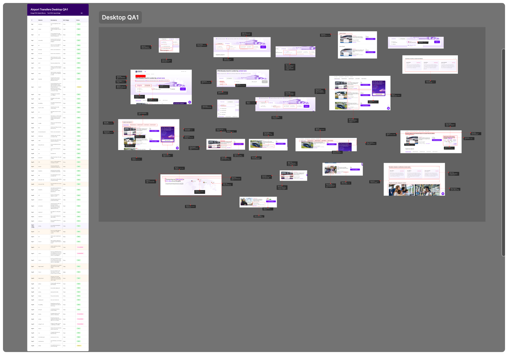
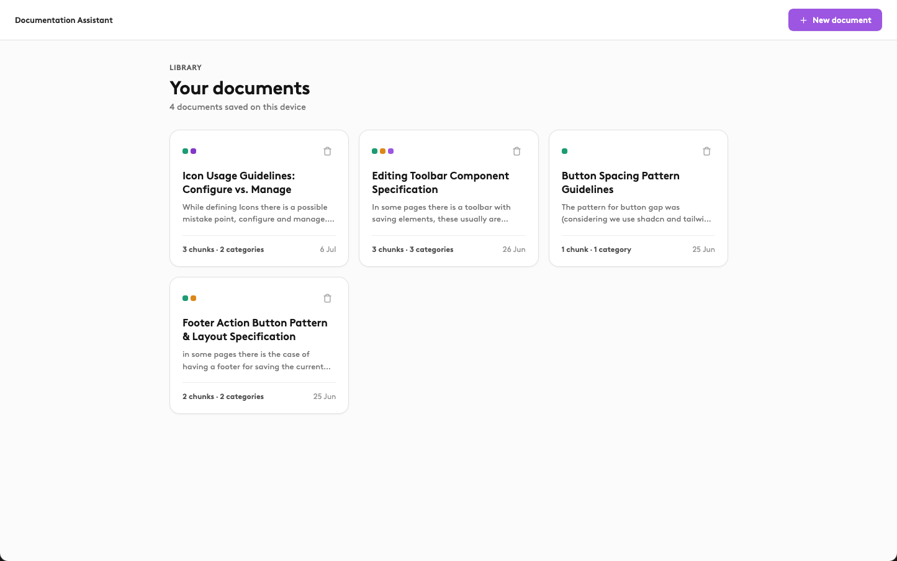
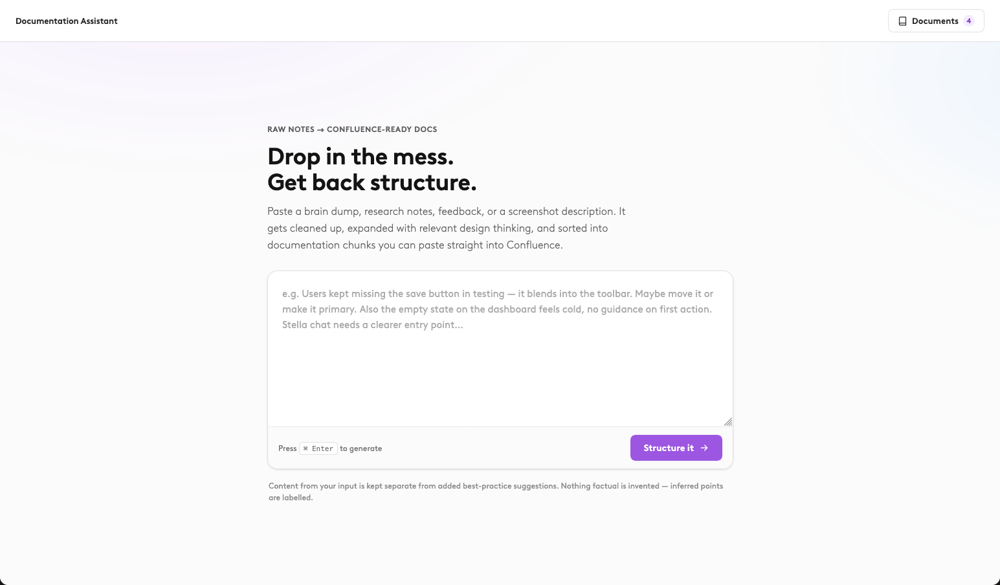
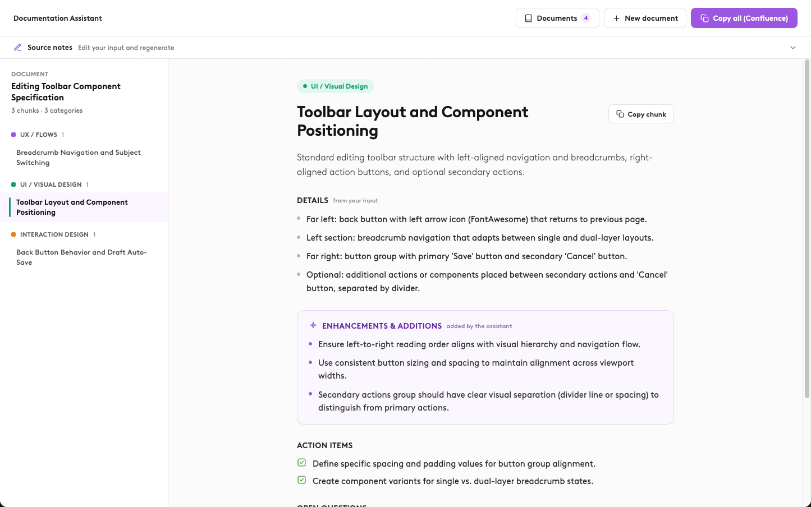
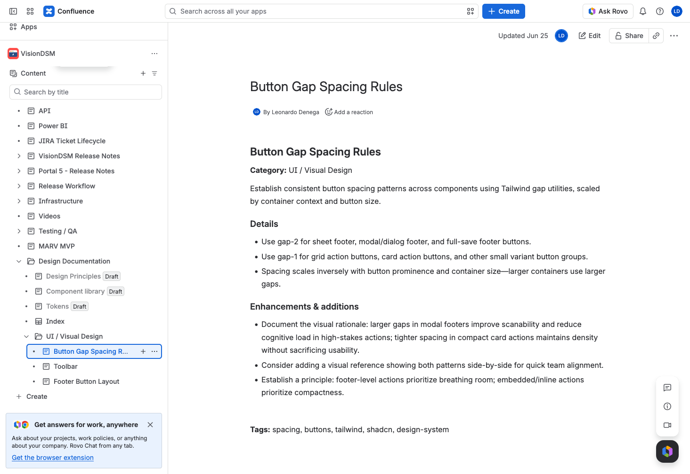

An AI-assisted workflow that turns scattered design notes and decisions into structured documentation, making it easier to review, share, and maintain product knowledge across a team.
Focus:
AI-assisted workflows
Design Operations
Knowledge Management
My role:
Product Design
Workflow Design
UX
As the only designer on the team, I often held the context behind design decisions, patterns, and product behaviors. That knowledge was useful in day-to-day collaboration, but harder to share consistently as the product evolved.
Documenting everything manually introduced another layer of work. Notes, decisions, and definitions needed to be organized into a format that other designers, developers, and product stakeholders could understand and reuse.
I wanted to explore how AI could reduce that overhead without losing the context behind the work.

I created an AI-powered tool that transforms design notes and decisions into structured documentation.
Rather than starting every document from scratch, the workflow uses information already captured during the design process and organizes it into a consistent format.
I also connected the workflow to Confluence, where the team already maintained its documentation, so the output could move beyond a personal workspace and become accessible to the wider team.
The goal was to make documenting design decisions a natural extension of the work, rather than a separate task to remember later.

Start with the notes, definitions, or design decisions already collected during the product-design process.
Use AI to organize the input into a consistent documentation format, making the information easier to scan, understand, and reuse.
Review the generated documentation to check that the original meaning and important context are preserved before sharing it.
Export the structured documentation directly to Confluence, bringing the output into the team's existing knowledge-sharing workflow.


The main challenge was making the tool feel like a practical design utility rather than a generic chatbot.
I focused the experience on a simple sequence: provide context, generate structured content, review the result, and move it into the team's documentation workspace.
This approach keeps the designer involved in the process while reducing the repetitive work of organizing and formatting information.
The integration with Confluence was important because generating a useful document is only part of the problem. The information also needs to reach the people who depend on it.

The main challenge was making the tool feel like a practical design utility rather than a generic chatbot.
I focused the experience on a simple sequence: provide context, generate structured content, review the result, and move it into the team's documentation workspace.
This approach keeps the designer involved in the process while reducing the repetitive work of organizing and formatting information.
The integration with Confluence was important because generating a useful document is only part of the problem. The information also needs to reach the people who depend on it.
Generating text is easy to demonstrate. Creating documentation that a team can actually rely on requires more consideration.
The workflow focuses on consistent structure, preservation of context, and integration with an existing knowledge base.
These decisions help connect individual design work to a shared team resource, making it easier for others to understand decisions without depending entirely on informal conversations or the original author.
AI supports the transformation, but the designer remains responsible for checking the output before it becomes part of the team's documentation.
The concept reduces the manual effort involved in turning design notes into structured documentation and provides a more direct path into the team's existing Confluence workspace.
The next step would be to evaluate its value across real documentation tasks, looking at:
These measures would help determine whether the workflow improves not just document creation, but the quality and accessibility of shared product knowledge.
This exploration looks at how AI can reduce the friction between doing design work and documenting the decisions behind it.
The opportunity isn't simply to write documentation faster. It's to make useful product knowledge easier to capture, share, and reuse as a team grows.